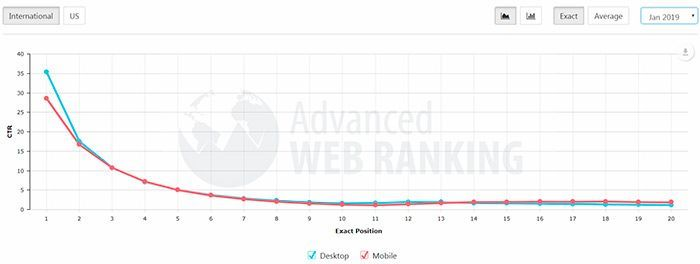

¿Ques es el CTR y como medirlo?

En esta ocasión te traigo un artículo sencillo pero eficaz para mejorar el SEO de tu web: cómo aumentar el CTR de tus resultados en Google.
Ya sabes que cuando una persona busca algo en Google (o en cualquier buscador) lo normal es que pinche en el primer o segundo resultado de búsqueda.
Sin embargo, esto no siempre es así. En ocasiones, entran en resultados de búsqueda que no están en primera posición por diferentes motivos: es una web que ya conocen, es una web popular, en la descripción aparece lo que ha buscado en negrita, en el título aparece el año actual, etc.
Sea como sea, la realidad es que por un motivo u otro, hay personas que en vez de pulsar en el primer o segundo resultado, se van al resultado quinto o sexto porque les ha llamado más la atención. Y esto influye en el movimiento de las SERPS: cuantas más personas hagan clic en ese resultado de búsqueda, más alto será su CTR; lo que Google interpretará como que es un resultado de búsqueda que satisface más al usuario y lo irá subiendo de posiciones.
¿Qué es el CTR y cómo se calcula?
CTR son las siglas de Click Through Rate que literalmente significa Ratio de clics. Concretando más, en SEO el CTR o Click Through Rate es el porcentaje de clics que recibe un determinado resultado de búsqueda de las SERPs.
¿Que qué es SERP? Una SERP no es más que una página de normalmente 10 resultados de búsqueda..
Pongamos un ejemplo práctico: si consultas en Google cualquier término, por ejemplo “caramelos de menta”, Google te arrojará una pantalla que contiene diferentes resultados de búsqueda. Pues bien, eso es una SERP.
Y dentro de esa SERP, los resultados de búsqueda tendrán diferente CTR siendo el resultado que más CTR tiene el que está en el puesto número 1, el segundo con mayor CTR será el situado en el puesto número 2 y así sucesivamente (o al menos esa es la teoría).
A continuación te pongo una imagen con los CTR para dispositivos móviles y para PCs en función de la posición en las SERPs en el mes de enero:
Cómo se calcula el CTR
La fórmula utilizada para calcular el CTR es el número de clics que recibe un resultado de búsqueda dividido entre las veces que aparece ese resultado en las SERPs. Y, como se representa en porcentaje, el resultado se multiplica por 100.
Por ejemplo, si un resultado de búsqueda aparece 100 veces en las SERPs y hacen clic en él 25 veces (100/25 = 0,25 ; 0,25 x 100 = 25 %) tendrá un CTR de 25 %. Un porcentaje bastante bueno por lo que probablemente esté en primera o segunda posición.
¿Cómo ver el CTR de mi web?
Por suerte para todos, el CTR no tienes que calcularlar.
Para ver el CTR de las diferentes páginas y artículos de tu web o blog tan solo tendrás que usar Google Search Console.
Abre desde aquí tu Google Search Console, en el menú pulsa en Rendimiento, en el gráfico selecciona CTR medio y listo.
Desde aquí podrás ver el CTR tanto en el gráfico como justo debajo por Consultas (las keywords que usan los usuarios para encontrarte), por Páginas, por Países, Dispositivos y Apariencia en el Buscador.

¿De qué depende el CTR en el SEO?
Hay muchísimos factores que influyen en el número de clics de un resultado de búsqueda. Un pequeño cambio en el title o en la metadescription puede incrementar muchísimo el CTR pero también puede bajarlo si quitas algo llamativo.
Entre todos esos factores, los más influyentes son:
- El title.
- La url / Migas de pan.
- La metadescription.
- Los rich snippets.
- La fecha.
Abre desde aquí tu Google Search Console, en el menú pulsa en Rendimiento, en el gráfico selecciona CTR medio y listo.
Desde aquí podrás ver el CTR tanto en el gráfico como justo debajo por Consultas (las keywords que usan los usuarios para encontrarte), por Páginas, por Países, Dispositivos y Apariencia en el Buscador.